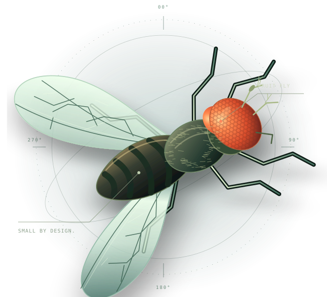
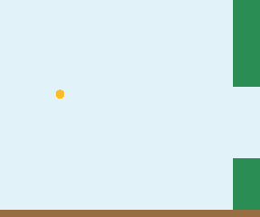

01→
Give it a view.
Game pixels become a high-contrast visual stimulus.
OBSERVATIONAN OPEN NEUROSCIENCE ARCADE
166,700 mapped neurons. One very difficult game. An experiment in turning a fly’s neural activity into a well-timed flap.
Full map verified. First action decoders trained.

01 / THE ARCADE
NO COINS REQUIRED
Same gravity. Same gaps.
Let’s see how you do.
02 / LEARNING IN THE OPEN
GOOD SCIENCE KEEPS THE MISSESThe learning pilot trains an action decoder from full-network activity. The mapped connection weights stay fixed.
Mean pipes cleared on three unseen layouts.
| CONTROLLER | PIPES | FRAMES |
|---|---|---|
| Results are loading. Raw reports are on GitHub. | ||
The scripted teacher sees privileged game state. Three layouts are an early check; they don’t establish a biological advantage.
Inspect the complete reportActual evaluation, re-rendered in the arcade style. Always the first test seed, whatever the score.
03 / UNDER THE EXOSKELETON
BIOLOGY → COMPUTATION → FLAPA connectome is a map of connections. We use the retained MaleCNS network inside an approximate simulator, then teach a small decoder to act on its activity.
Game pixels become a high-contrast visual stimulus.
OBSERVATIONA documented adapter drives mapped photoreceptors.
MODELED INTERFACE166,700 retained neurons. Mapped weights held fixed.
SIMULATED NETWORKA small action decoder learns when to flap or wait.
TRAINABLE READOUTThe current pilots use imitation learning. Reliable play and a benefit over simpler networks are still open questions. Read the method ↗
04 / SHOW YOUR WORK
The complete retained map ran on a standard GitHub CPU runner. These are measured responses to six saved game frames.
September 11, 2026 · six samples after 100 ms warmup · learning disabled for this runtime benchmark

Choose a bar to inspect its exact model input and recorded response. These measurements are not live game telemetry.
THE LAB DOOR IS OPEN
Try the game. Question the method. Reproduce a run. There’s a lot left to figure out.
Get your hands on the codegit clone https://github.com/jackspiece/flappy-fly.git
cd flappy-fly
python -m http.server 8000 --directory docsCURIOUS? GOOD.
Yes. The wiring comes from MaleCNS v1.0, released by HHMI Janelia, Google Research, and collaborators. We retain 166,700 neurons under the upstream inclusion policy. The simulator and its interfaces are approximate models; the map alone does not recreate a living fly.
A small action decoder learns from the full network’s activity. The mapped connections stay fixed. Every pilot records the trained parameters, evaluation seeds, baseline scores, and a checkpoint.
The arcade lets you play or watch a scripted demo. The separate recorded flight shows a real decoder evaluation. The full simulator runs in Python and C++ on a GitHub runner.
We don’t know. Establishing an advantage needs reliable play, many more test layouts, and matched comparisons with simpler and shuffled networks. That’s part of what makes the experiment interesting.